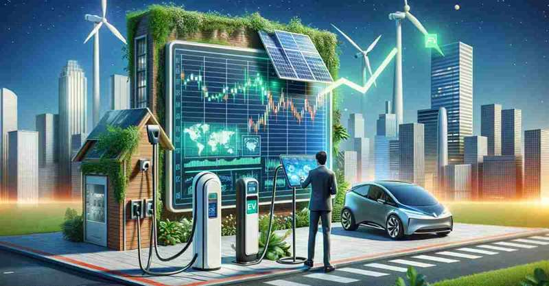
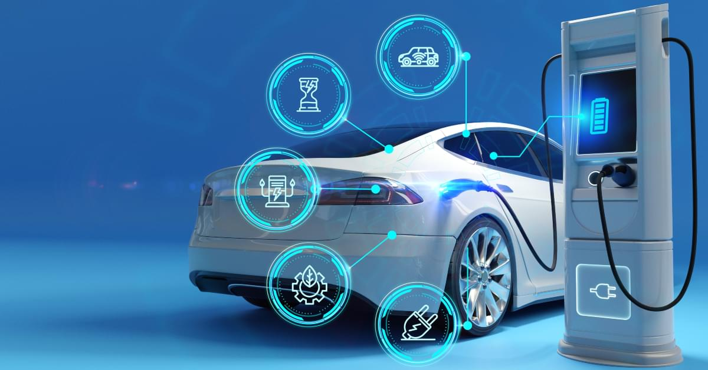
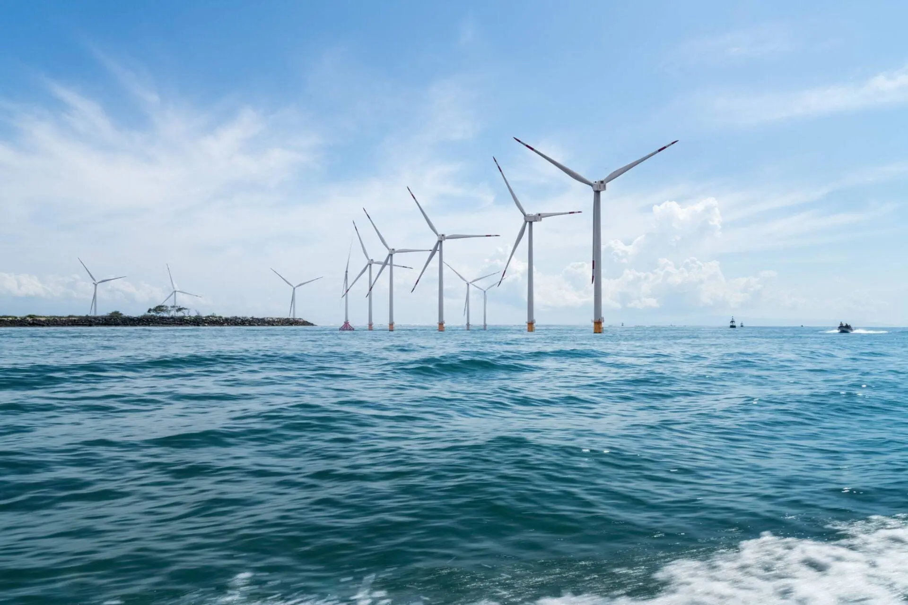
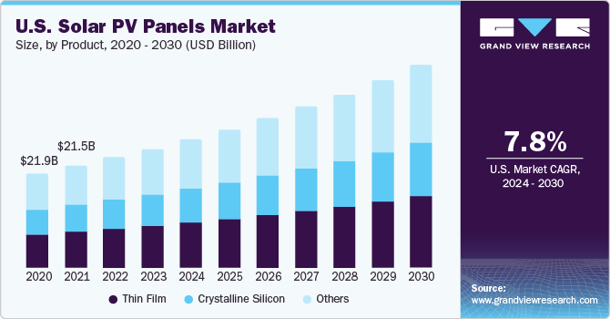

Ensure Access to Affordable, Reliable, Sustainable and Modern Energy for All
Introduction
Access to clean and affordable energy is essential for economic growth, environmental protection, and human well-being. The shift towards renewable energy sources helps reduce carbon emissions, improve health, and create green jobs.

Electric Vehicles
Electric vehicles (EVs) play a major role in transforming transportation. They help reduce greenhouse gas emissions and dependency on fossil fuels. With advances in battery technology and increasing charging infrastructure, EVs are becoming more affordable and accessible.

Solar Power
Solar power harnesses energy from the sun to generate electricity in a clean and sustainable way. The cost of solar technology has dropped significantly, making it a practical choice for homes and businesses around the world. It is especially valuable in rural areas where grid access is limited.
Wind Power
Wind power is another key pillar of renewable energy. By using large wind turbines to capture the kinetic energy of wind and convert it into electricity, we can generate clean and sustainable power. Wind farms can be built on land or offshore, providing flexibility and scale. In many countries, wind energy is now among the cheapest forms of new electricity generation.

Market Trends & Opportunities
Investments in renewable energy have reached record levels, with governments and private companies actively supporting clean energy initiatives. The global renewable energy market is projected to continue growing rapidly, with new innovations and supportive policies encouraging further adoption.

Call to Action
We all have a role to play in promoting sustainable energy. Consider switching to an electric vehicle, installing solar panels, or supporting local clean energy initiatives. Together, we can create a greener and more equitable future for all.